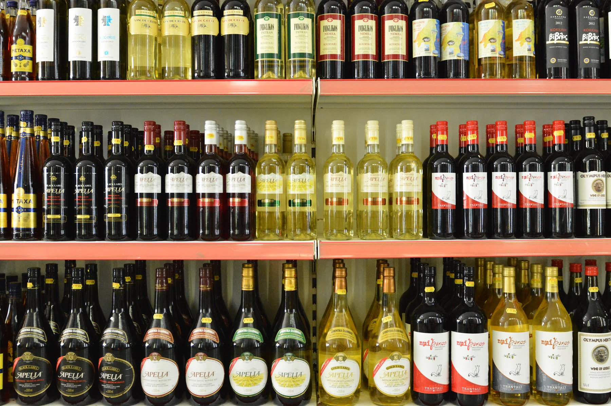

Wine made the ancient way
We curate rare, high-altitude Greek vintages from volcanic Santorini and old-vine Naoussa. Handcrafted with millennia of tradition, tailored for the modern connoisseur. Each bottle holds a legacy worth sharing.

We curate rare, high-altitude Greek vintages from volcanic Santorini and old-vine Naoussa. Handcrafted with millennia of tradition, tailored for the modern connoisseur. Each bottle holds a legacy worth sharing.
